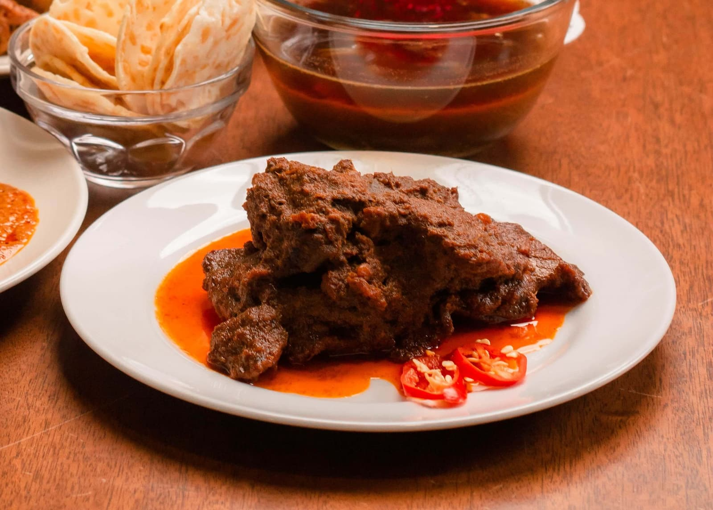

Rendang Recipe

Descriptions
Rendang is a traditional indonesian beef dish cooked slowly with coconut milk and spices. It has a rich, savory, and slightly spicy taste.
Ingredients
- 500 g beef, cut into medium pieces
- 400 ml coconut milk
- 2 lemongrass stalks, crushed
- 3 kaffir lime leaves
- 2 bay leaves
- 1 tsp salt
- 1 tsp sugar
- 2 tbsp cooking oil
Spice paste:
- 5 shallots
- 4 cloves garlic
- 5 red chilies
- 2 cm ginger
- 2 cm galangal
- 2 cm turmeric
- 1 tsp corlander powder
steps
- Blend all spice paste ingredients until smooth.
- Heat oil in a pan, then saute the spice paste until fragrant.
- Add lemongrass, kaffir ;ime leaves, and bay leaves. Stir well.
- Add the beef and cook until the beef changes color.
- Pour in the coconut milk. Add salt and sugar.
- Cook on low heat and stir occasionally.
- Continue cooking until the beef is tender and the sauce becomes thick and dark.
- Serve warm with steamed rice.
Back To Home